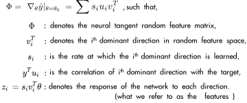
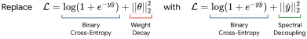

Gradient Starvation
We identify and formalize a fundamental gradient descent phenomenon resulting in a learning proclivity in neural networks. Gradient Starvation arises when the loss is minimized by capturing only a subset of features relevant for the task, despite the presence of other predictive features which fail to be discovered. We identify simple properties of learning dynamics during gradient descent that lead to Gradient Starvation and prove that such a situation can be expected given certain statistical structure in training data. Based on our proposed formalism, we introduce Spectral Decoupling, a novel regularization method that provably decouples the dynamics. We illustrate our findings with simple and real-world out-of-distribution (OOD) generalization experiments.
Introduction
In 1904, a horse named Hans attracted worldwide attention due to the belief that it was capable of doing arithmetic calculations [1]. Its trainer would ask Hans a question, and Hans would reply by tapping on the ground with its hoof. However, it was later revealed that the horse was only noticing subtle but distinctive signals in its trainer’s unconscious behavior, unbeknown to him, and not performing arithmetic.
An analogous phenomenon has been noticed when training neural networks. State-of-the-art neural networks reportedly appear to focus on low-level superficial correlations rather than more abstract and robustly informative features of interest, e.g. [2]. The rationale behind such behavior is well known:
Given strongly-correlated and easy-to-learn features in training data, gradient descent is biased towards learning them first. In fact, gradient descent updates parameters predominantly in directions that only capture these dominant features, thus "starving" the gradient from other potentially informative features.
However, the notion of feature and its learning speed are rather vague. Here, we try to provide a formal treatment of the Gradient Starvation and seek to remedy that.
Gradient Starvation
Let's begin with a simple example. Consider the blue and red datapoints in the top figure. I actually spent half of my PhD trying to classify them from each other! It can be observed that as soon as the two classes are linearly separable (even with a slight margin), the learned decision boundary is almost linear and located very close to the datapoints (Check the paper for higher resolution plots.).
To understand what is going on during the course of learning, we look into the dynamics of the gradient-descent on network's parameters \(\theta\): $$\dot{\theta} = -\eta \nabla_{\theta}\mathcal{L} = - \eta \nabla_{\theta}\hat{y} \ \nabla_{\hat{y}}\mathcal{L},$$
where \(\mathcal{L}\) is the cross-entropy loss, \(\eta\) is the learning rate, and \(\hat{y}\) is the network's output. Solving these dynamics is very difficult in general due to the non-linearity of both \(\nabla_{\theta}\hat{y}\) and \(\nabla_{\hat{y}}\mathcal{L}\) terms. Here, in the context of Neural Tangent Kernel [4], we linearize the network and approximate the loss to re-write the dynamics in the dual space (Please see the paper for more details). With the linearized network as \(\hat{y} = \Phi \theta\) and \(\Phi = \nabla_{\theta}\hat{y}\), we apply a singular value decomposition on \(\Phi\):  In the paper, we show that the learning dynamics of \(z_i\)'s are coupled. Given certain assumptions, with two features \(z_1\) and \(z_2\), we show that \(\frac{d z_2}{d s_1} < 0\). It means that an increase in the dominancy of \(z_1\) has a detrimental effect on the learning of \(z_2\) even if \(s_2\) remains constant. As an example, let's fix \(s_2 = 2\) and vary \(s_1\) from 2 to 8. It can be seen that a larger \(s_1\) not only result in faster learning of \(z_1\), but it also prevents \(z_2\) from learning:
Spectral Decoupling
It appears that Gradient Starvation happens because a network could become over-confident in its predictions by capturing only one or a few dominant features. Investigating the fixed points of the dynamics reveals that penalizing the confidence of the network could prevent Gradient Starvation. Specifically, adding an L2 penalty on the network's logits provably decouples the fixed points of the dynamics. As a result, we call this new regularization the Spectral Decoupling (SD):  In the previous plot, try moving the slider to left and right. You observe that unlike vanilla cross-entropy, the fixed points of the dynamics are decoupled when SD is applied. SD leads to learning more features (\(z_i\)'s), as learning one feature does not interfere with another anymore. Such decoupling is manifested by learning a curved decision boundary in the classification task at the top when "SD" is chosen as the regularization. Whether it is useful or not for the generalization depends on the task structure and the assumptions we make about the test distribution. We discuss this shortly in the final section of this blog post, but before that, let's see a few more experimental results.
Experimental Results
Colored MNIST with color bias
We conduct experiments on the Colored MNIST Dataset [5]. The task is to predict labels \(y=-1\) for digits 0 to 4 and \(y=+1\) for digits 5 to 9. A color channel is artificially added to each example to deliberately impose a spurious correlation between the color and the label. However, an opposite correlation between the color and the label is present in the test set. Also, a 25 % label noise is added to both the training and test datasets, and hence an oracle that totally ignores the color should get \(\sim\)75 % accuracy, and it does, as shown in the table on the right. Empirical Risk Minimization (ERM - vanilla cross-entropy) performs well on the training set (91 %) but very bad on the test set (24 %). It is expected because the color feature is reversed in the test set, and we cannot expect the poor model to ignore the color! On the other hand, Invariant Risk Minimization (IRM) achieves good performance on the test set (67 %). However, SD also performs well (68 %) without requiring access to multiple training environments, unlike IRM.
How does SD learn to ignore the color? Short answer: It does not.
The following diagram provides a more fine-grained comparison between the three methods of ERM, IRM, and SD. As described on the left, the four squares represent four combinations of "shape" and "color" (For example, environment No. 2 is colored-digit, which is the same as the test set.).
Compare three values of 9.4 %, 9.4 % and 49.6 %: Both ERM and SD have learned the color feature, but since it is inversely correlated with the label when only the color feature is provided, as expected, both ERM and SD perform poorly. Now compare the corresponding entropies 0.00 and 0.41: Although both ERM and SD have learned the color feature, ERM is much more confident in its predictions (zero entropy). As a consequence, when digit features are provided along with the color feature, ERM still performs poorly (23.9 %), but SD achieves significantly better results (67.2 %). However, note that IRM is indeed invariant to the color feature altogether which is better but it comes at the price that we need having access to multiple training environments.
How are different methods, including SD tuned?
In this task, since the training set and the test set are not IID, we cannot use the training set (or the validation set) for tuning hyperparameters. Therefore, by design, this task assumes access to the test set for hyperparameter tuning for all the reported methods. This is indeed cheating as we are not supposed to touch the test set in general. So these results should only be interpreted as a probe that shows the reliance on spurious correlation. We provide more discussion on this in the next section.
CelebA with gender bias
In another experiment, we classify CelebA images according to their hair color into two classes of blond or dark hair. However, Gender \(\in\) {Male, Female} is spuriously correlated with the HairColor \(\in\) {Blond , Dark} in the training data. The rarest group, which is blond males, builds less than 1 % of the training data. A model with the vanilla cross-entropy generalizes well on average but fails to generalize to the rarest group (blond male) with only 40.35 % accuracy. On the other hand, our proposed spectral decoupling improves the performance more than double to 83.24 %. For this task, we use a slightly different formulation of the Spectral Decoupling (see the paper for more details.).
Closing Thoughts
On reliance upon spurious correlations and robustness
In the context of robustness in neural networks, state-of-the-art neural networks appear to naturally focus on low-level superficial correlations rather than more abstract and robustly informative features of interest. As we argue in this work, Gradient Starvation is likely an important factor contributing to this phenomenon and can result in adversarial vulnerability. Recent work such as [7] and [8] draw a similar conclusion and argue that "an insufficiency of the cross-entropy loss" causes excessive invariances to predictive features.
On implicit bias
It is evident to everyone that neural networks generalize surprisingly well in general. This is in spite of the fact that neural networks typically contain orders of magnitude more parameters than the number of examples in a training set and have sufficient capacity to fit a totally randomized dataset perfectly [9]. The widespread explanation is that the gradient descent has a form of implicit bias towards learning simpler functions that generalize better according to Occam's razor. Our view of Gradient Starvation reinforces this explanation. In essence, when training and test data points are drawn from the same distribution, the top salient features are predictive in both sets. We conjecture that in such a scenario, by not learning the less salient features, Gradient Starvation naturally protects the network from overfitting.
On Gradient Starvation and no free lunch theorem
The no free lunch theorem states that "learning is impossible without making assumptions about training and test distributions". Probably, the most commonly used assumption of machine learning is the i.i.d. assumption, which assumes that both training and test data are identically distributed. However, in general, this assumption might not hold, and in many practical applications, there are predictive features in the training set that do not generalize to the test set.
Now the question is how to favor generalizable features over spurious features? The most common approaches include data augmentation, controlling the inductive biases, using regularizations, and more recently training using multiple environments.
Here, we would like to elaborate on an interesting thought experiment of [10]: Suppose a neural network is provided with a chess book containing examples of chess boards with the best movement indicated by a red arrow. The network can take two approaches: 1) To learn how to play chess, or 2) To learn just the red arrows. Either of these solutions results in zero training loss while only the former is generalizable. With no external knowledge or any inductive biases, the network learns the simpler solution which is to memorize the red arrows.
Recent works assume that the network has also access to another chess book in which blue writings indicate the best movement. They each introduce novel methods to aggregate information from multiple training environments in a way that favors the generalizable / domain-agnostic / invariant solution.
In this paper, we argue that even with having access to only one training environment, there is useful information in the training set that fails to be discovered due to Gradient Starvation. The information on how to actually play chess is already available in any of the chess books. Still, as soon as the network learns the red arrows, the network has no incentive for further learning because of Gradient Starvation. Therefore, learning the red arrows is not an issue per se, but not learning to play chess is.
A better understanding and control of Gradient Starvation and its impact on generalization offers promising avenues to address this issue with minimal assumptions. Indeed, our Spectral Decoupling method requires an assumption about feature imbalance but not to pinpoint them exactly, relying on modulated learning dynamics to achieve balance.